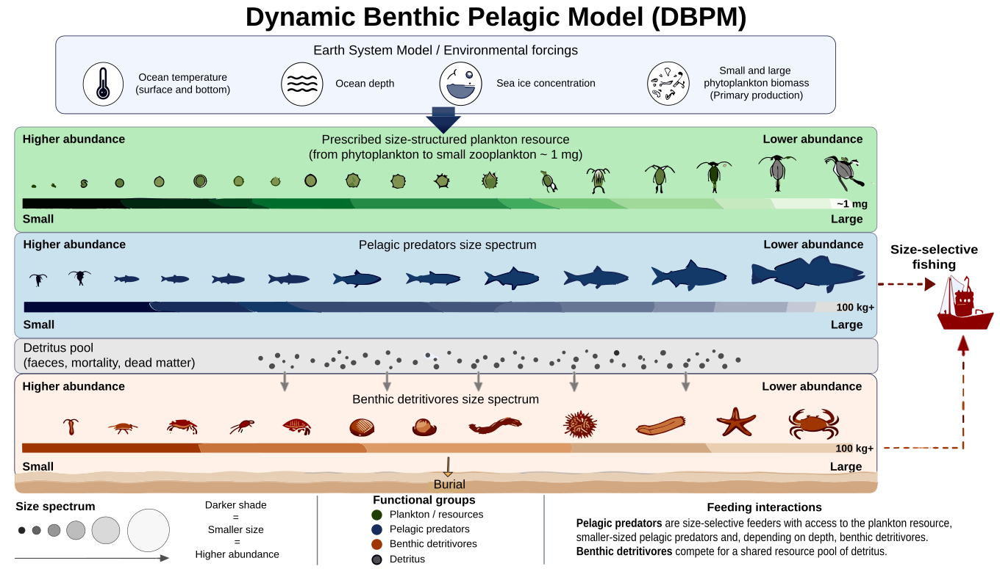

About
This organization develops and maintains the DBPM (Dynamic Benthic Pelagic Size Spectrum Model), a tool for exploring the size structure and dynamics of benthic and pelagic communities in aquatic ecosystems. DBPM is a global application for studying climate change impacts on marine ecosystems.DBPM is a coupled physical-ecological model that is forced with climate variables and can be applied globally (1 degree grid cells) or aggregated into Large Marine Ecosystems (LMEs) or other regions of interest.

Model Inputs: Earth System Model Forcing
DBPM is driven by outputs from an Earth System Model (ESM; e.g. GFDL-MOM6-COBALT2 in the ISIMIP3a/FishMIP protocol, monthly). These variables are processed into the model's forcing — the plankton size spectrum, temperature effects, and detritus/export supply:
| ESM variable | Dimensions | Units | Used for |
|---|---|---|---|
phyc — total phytoplankton carbon | 3D (lon, lat, depth, time) | mol m⁻³ | plankton size-spectrum intercept & slope; vertical biomass weights |
phypico — picophytoplankton carbon | 3D | mol m⁻³ | small-vs-large phyto split → spectrum slope |
thetao — ocean temperature | 3D | °C | pelagic (water-column) temperature effect |
tob — sea-floor temperature | 2D | °C | benthic temperature effect |
tos — sea-surface temperature | 2D | °C | surface temperature effect; export-ratio formula |
intpp — integrated primary production | 2D | mol m⁻² s⁻¹ | export-ratio denominator |
expc-bot — carbon export flux to seafloor | 2D | mol m⁻² s⁻¹ | export ratio → benthic detritus supply |
deptho — ocean depth (bathymetry) | 2D (static) | m | depth channel / pelagic–benthic coupling |
thkcello — layer thickness | 3D (static) | m | weights for vertical integration of the 3D fields |
siconc — sea-ice concentration | 2D | % | sea-ice gate on fishing effort (gridded runs only) |
Plus cell area (m²) for aggregating per-cell densities. The plankton spectrum intercept
and slope are derived from phyc and phypico; the export ratio ≈
expc-bot / intpp; temperature effects from thetao and
tob. The depth-resolved (3D) fields are needed for the vertically biomass-weighted method;
a standard method can instead use the vertically-integrated phyc-vint/phypico-vint
with surface tos.
Key Publications: Global Model Results for FishMIP
- Blanchard JL, Watson RA, Fulton EA, Cottrell RS, Nash KL, Bryndum-Buchholz A, Büchner M, Carozza DA, Cheung WWL, Elliott J, Davidson LNK, Dulvy NK, Dunne JP, Eddy TD, Galbraith E, Lotze HK, Maury O, Müller C, Tittensor DP, Jennings S. 2017. Linked sustainability challenges and trade-offs among fisheries, aquaculture and agriculture. Nature Ecology & Evolution 1: 1240–1249. https://doi.org/10.1038/s41559-017-0258-8
- Lotze HK, Tittensor DP, Bryndum-Buchholz A, Eddy TD, Cheung WWL, Galbraith ED, Barange M, Barrier N, Bianchi D, Blanchard JL, Bopp L, Büchner M, Bulman CM, Carozza DA, Christensen V, Coll M, Dunne JP, Fulton EA, Jennings S, Jones MC, Mackinson S, Maury O, Niiranen S, Oliveros-Ramos R, Roy T, Fernandes JA, Schewe J, Shin YJ, Silva TAM, Steenbeek J, Stock CA, Verley P, Volkholz J, Walker ND, Worm B. 2019. Global ensemble projections reveal trophic amplification of ocean biomass declines with climate change. Proceedings of the National Academy of Sciences 116: 12907–12912. https://doi.org/10.1073/pnas.1900194116
- Bryndum‐Buchholz A, Tittensor DP, Blanchard JL, Cheung WWL, Coll M, Galbraith ED, Jennings S, Maury O, Lotze HK. 2019. Twenty‐first‐century climate change impacts on marine animal biomass and ecosystem structure across ocean basins. Global Change Biology 25: 459–472. https://doi.org/10.1111/gcb.14512
- Bryndum-Buchholz A, Prentice F, Tittensor DP, Blanchard JL, Cheung WWL, Christensen V, Galbraith ED, Maury O, Lotze HK. 2020. Differing marine animal biomass shifts under 21st century climate change between Canada’s three oceans. FACETS 5: 105–122. https://doi.org/10.1139/facets-2019-0035
- Tittensor DP, Novaglio C, Harrison CS, Heneghan RF, Barrier N, Bianchi D, Bopp L, Bryndum-Buchholz A, Britten GL, Büchner M, Cheung WWL, Christensen V, Coll M, Dunne JP, Eddy TD, Everett JD, Fernandes-Salvador JA, Fulton EA, Galbraith ED, Gascuel D, Guiet J, John JG, Link JS, Lotze HK, Maury O, Ortega-Cisneros K, Palacios-Abrantes J, Petrik CM, du Pontavice H, Rault J, Richardson AJ, Shannon L, Shin Y-J, Steenbeek J, Stock CA, Blanchard JL. 2021. Next-generation ensemble projections reveal higher climate risks for marine ecosystems. Nature Climate Change 11(11): 973–981. https://doi.org/10.1038/s41558-021-01173-9
- Cinner JE, Caldwell IR, Thiault L, Ben J, Blanchard JL, Coll M, Diedrich A, Eddy TD, Everett JD, Folberth C, Gascuel D, Guiet J, Gurney GG, Heneghan RF, Jägermeyr J, Jiddawi N, Lahari R, Kuange J, Liu W, Maury O, Müller C, Novaglio C, Palacios-Abrantes J, Petrik CM, Rabearisoa A, Tittensor DP, Wamukota A, Pollnac R. 2022. Potential impacts of climate change on agriculture and fisheries production in 72 tropical coastal communities. Nature Communications 13: 3530. https://doi.org/10.1038/s41467-022-30991-4
- Guibourd de Luzinais V, du Pontavice H, Reygondeau G, Barrier N, Blanchard JL, Bornarel V, Büchner M, Cheung WWL, Eddy TD, Everett JD, Guiet J, Harrison CS, Maury O, Novaglio C, Petrik CM, Steenbeek J, Tittensor DP, Gascuel D. 2023. Trophic amplification: a model intercomparison of climate-driven changes in marine food webs. PLOS ONE 18: e0287570. https://doi.org/10.1371/journal.pone.0287570
- Blanchard JL, Novaglio C (eds). 2024. Climate change risks to marine ecosystems and fisheries: Projections to 2100 from the Fisheries and Marine Ecosystem Model Intercomparison Project. FAO Fisheries and Aquaculture Technical Paper No. 707. Rome, FAO. https://doi.org/10.4060/cd1379en
- Mariani G, Guiet J, Bianchi D, DeVries T, Barrier N, Troussellier M, Mouillot D. 2025. The combined impact of fisheries and climate change on future carbon sequestration by oceanic macrofauna. Nature Communications 16. https://doi.org/10.1038/s41467-025-64576-8
- Murphy K, Fierro-Arcos D, Rohr T, Green D, Novaglio C, Baker K, Ortega-Cisneros K, Eddy TD, Harrison CS, Hill SL, Eskuche-Keith P, Cataldo-Mendez C, Petrik CM, Pinkerton M, Spence P, Stollberg I, Subramaniam RC, Trebilco R, Tulloch V, Palacios-Abrantes J, Bestley S, Bianchi D, Boyd P, Buchanan PJ, Bryndum-Buchholz A, Coll M, Corney S, Datta S, Everett JD, Forestier R, Fulton EA, Guibourd de Luzinais V, Heneghan R, Mason JG, Maury O, McMahon CR, Murphy E, Richardson AJ, Tittensor DP, Spillias S, Steenbeek J, Veytia D, Blanchard J. 2025. Developing a Southern Ocean marine ecosystem model ensemble to assess climate risks and uncertainties. Earth's Future 13: e2024EF004849. https://doi.org/10.1029/2024EF004849
- Eddy TD, Heneghan RF, Bryndum-Buchholz A, Fulton EA, Harrison CS, Tittensor DP, Lotze HK, Ortega-Cisneros K, Novaglio C, Bianchi D, Büchner M, Bulman C, Cheung WWL, Christensen V, Coll M, Everett JD, Fierro-Arcos D, Galbraith ED, Gascuel D, Guiet J, Mackinson S, Maury O, Niiranen S, Oliveros-Ramos R, Palacios-Abrantes J, Piroddi C, du Pontavice H, Reum J, Richardson AJ, Schewe J, Shannon L, Shin Y, Steenbeek J, Volkholz J, Walker ND, Woodworth-Jefcoats P, Blanchard JL. 2025. Global and regional marine ecosystem models reveal key uncertainties in climate change projections. Earth's Future 13: e2024EF005537. https://doi.org/10.1029/2024EF005537
- Australian Climate Service. 2025. National Climate Risk Assessment. Australian Government (Bureau of Meteorology, CSIRO, ABS & Geoscience Australia), Canberra. https://www.acs.gov.au/pages/national-climate-risk-assessment
- Johnson JE, Wabnitz CCC (eds). 2025. Climate change implications for fisheries and aquaculture in the Pacific Islands region. Pacific Community (SPC), Nouméa, New Caledonia. https://www.spc.int/DigitalLibrary/Doc/FAME/Reports/Johnson_25_climate_book.html
- Koerner LM, Palacios-Abrantes J, Novaglio C, Blanchard J, Melnychuk MC, Essington TE, Everett JD, Guiet J, Harrison CS, Heneghan RF, Currey RJ, Jardim E, Polidoro B, Longo C. 2026. Climate change risks to future sustainable fishing using global seafood ecolabel data. Cell Reports Sustainability 3: 100555. https://doi.org/10.1016/j.crsus.2025.100555
Previous Versions: Climate Change Projections
- Blanchard, J.L., Jennings, S., Holmes, R., Harle, J., Merino, G., Allen, I., Holt, J, Dulvy N.K., & Barange, M. 2012. Potential consequences of climate change for primary production and fish production in UK waters: a model comparison approach.
- Merino G, Barange M, Blanchard JL, Harle JL, Holmes, Icarus Allen, Edward H Allison, Marie Caroline Badjeck, Nicholas K Dulvy, Jason Holt, Simon Jennings, Christian Mullon, Lynda D Rodwell, Edward E A. 2012. Can marine fisheries and aquaculture help feed the world?
- Barange M, Merino G, Blanchard JL, Scholtens J, Harle J, Allison EH, Allen JI, Holt J, Jennings S. 2014. Impacts of climate change on marine ecosystem production in societies dependent on fisheries.
- Woodworth‐Jefcoats PA, Polovina JP, Dunne JP, Blanchard JL. 2013. Ecosystem size structure response to 21st century climate projection: large fish abundance decreases in the central North Pacific.
- Woodworth-Jefcoats PA, Polovina JJ, Howell EA, Blanchard JL. 2015. Two takes on the ecosystem impacts of climate change and fishing: Comparing a size-based and a species-based ecological model.
Original Model Development
- Blanchard, J.L., Jennings, S., Law, R., Castle, M.D., McCloghrie P., Rochet, M.J. & E. Benoît. 2009. How does abundance scale with body size in coupled size-structured food webs?
- Blanchard, J.L., Law, R., Castle, M.D. & S. Jennings. 2011. Coupled energy pathways and the resilience of size-structured food webs. Theoretical Ecology, 4(3), 289-300. https://doi.org/10.1007/s12080-010-0076-2
Extensions for Habitat Complexity and Coral Reefs
- Rogers A, Blanchard JL, Mumby PJ. 2014. Vulnerability of coral reef fisheries to a loss of structural complexity. Current Biology, 24(9), 1000-1005. https://doi.org/10.1016/j.cub.2014.02.026
- Rogers A, Blanchard JL, Mumby PJ. 2018. Fisheries productivity under progressive coral reef degradation. Journal of Applied Ecology, 55(3), 1041-1049. https://doi.org/10.1111/1365-2664.13056
- Rogers A, Blanchard JL, Newman SP, Dryden CS, Mumby PJ. 2018. High refuge availability on coral reefs increases the vulnerability of reef‐associated predators to overexploitation.
Please contact Julia Blanchard if you are interested in using this model, for more information, or to get involved in development.
Model Repositories
All code lives in the Benthic-Pelagic-Size-Spectrum-Model GitHub organisation. The main repositories are:
spatial-dbpm— the dbpmr R package (the repository and the package are synonymous): the compiled-C DBPM size-spectrum engine. Unlike earlier R implementations, it adds spatial movement (behavioural and passive transport) of the pelagic size spectrum.dbpmr-gridded-isimip3a— the gridded dbpmr ISIMIP3a workflow (R): runs the engine over every 1° ocean cell of a region, with biomass-weighted forcing, spatial-gravity effort, and gridded calibration.dbpm_isimip3a— the ISIMIP3a input-processing pipeline (Python): Earth System Model netCDFs → the forcing data the models consume.
Conditions of use. As a condition of fair use of the DBPM model:
- Repository. All DBPM-based work — model developments, extensions, and applications — should be hosted as a repository within this organisation, keeping the model lineage documented, reproducible, and properly attributed, and letting developments be shared across the community.
- Co-authorship. Those applying the model to new questions or regions are asked to contact the model developers at an early stage. Where the DBPM model is central to a study and its developers contribute substantially — to model development, configuration, or interpretation — co-authorship should be offered, in line with standard authorship criteria. Otherwise, the relevant model papers (see Key Publications above) should be cited and the developers acknowledged.
Contact & Collaboration
Interested in collaborating or learning more? Please open an issue or contact the maintainers through GitHub.